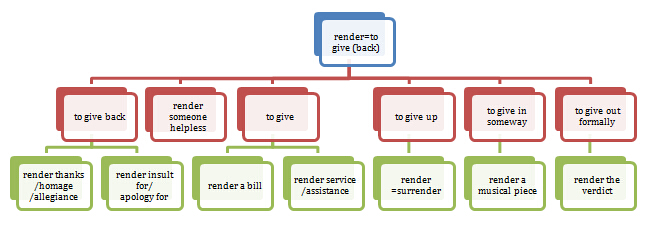

Etymology——探索词汇真义之学问
（学习云英语VB词汇建造师的心得体会）
吴谢宇（北京大学经济学院2012本）
我们不会更改任何一段历史，我们希望每个人都依止安好。
李浩 MD&PhD 吴晓峰 MD 朱前拯 MD&PhD 2016.03.03
背单词一直是小伙伴们最痛苦的事情，机缘巧合之下我学习了云英语的Vocabulary-Builder课程，现在已经告一段落，感慨良多，特此写下一篇心得体会，谈谈VB课程对我的背单词事业的意义，希望对大家有所借鉴。
PIE？Etymology？这些东东对背单词有啥用？？？
在大不列颠百科全书中，词源学（etymology）被定义为"the history of a word or word element, including its origins and derivation."它研究的是一个单词的来源及其演化。从词源上对这个词进行解说，etymon是希腊语，它的意思是"true sense"，-logy就是指一门学问。因此，词源学可以翻译为——探索单词真义之学问。
现代词源学基于历史语言学和比较语言学的研究范式和成果，将世界上各个语言分成了一些语系。而英语，就是PIE——Proto-Indo-European——原始印欧语的一个分支。除了英语之外，欧洲各主要语言——法语、德语、西班牙语、意大利语等，基本也都在这个分支之中。特别值得一提的是，拉丁语，希腊语，以及梵文，也在PIE当中。换句话说，它们都是同源的，有或远或近的亲缘关系，从而，一个自然的思路出现了——如果能够搞清楚这个“亲缘关系”到底是什么，有何规律，那么就能够触类旁通，（在一定程度上）同时掌握这数门语言。
在我看来，VB这门课程的基本思想就是这样——首先让我们了解并掌握PIE语系中不同语言之间的关联，然后在此基础上，构建词汇体系，迅速扩大词汇量。举个例子来说，ban是我们很早就学到的单词，通过一些法则，能够将ban与拉丁文传来的fable、fame等词相联系，还能够与希腊文传来的phone、prophecy、euphemism等词相联系，这样一来由ban这么一个词，就可以迅速扩充成以它为根基的一整个体系。
但是，这些词到底是如何联系起来的呢？有两条主线可以把握——一条是发音，另外一条是含义。从发音上讲，实际上存在一些规律，系统性地把英语、拉丁语还有希腊语（当然还包括其他PIE的语言，但仅举此三种对背英语单词最为重要的语言为例）对应起来，这些规律在学习了一些语言学的基础知识之后就能够大概地掌握，由于并不十分直观，在此就不赘述。从含义上讲，上面提出的那个例子中，各个词有一个基本的含义都是“说”，这就是它们的词源上的含义，具体而言，ban是一种命令式的说，因此是“禁令”，fable是大家口口相传的“故事，传说”，phone最早是声音的意思，显然是说出来的，等等。
我在VB中学到的最重要的东西之一，就是如何从这两条主线入手，把一些乍看起来完全没有关联的单词联系起来，一并记忆，这样确实大大提高了记忆单词的速度。
不过，我们不是在讨论背英语单词吗？拉丁文、希腊文似乎并不在直接的讨论范围内啊。其实不然，让我们来看看英语单词的构成，其中有36%是日耳曼来源（其实就是以前我们学的那些“来是come去是go，见了被人喊hello”这些日常用语，还有一些最基础和简单的词汇，高中基本上都已掌握）的，有23%是法语来源的，有29%是拉丁来源的，有7%是希腊语来源的，剩下的则是其他来源的。而法语来源，其本源也是拉丁文，换句话说，实际上英语中有超过50%的单词是来源于拉丁语和希腊语，这样看来，利用上面提到的关联方法，同时记忆拉丁和希腊来源词就是必不可少的了。
另外，在构建词汇体系的过程中，VB课程采用了一种很实际可行的办法，是从我们在高中学过的简单英语词汇出发，找到与之同源的难词，并建立关联，构建体系，还说上面那个例子，ban我们已经很熟了，借助ban这个简单词记比如说euphemism这个复杂词就方便一些了。
【主线一】发音演变
在观察和记忆到底哪些词是同源的时候，发音演变起到了至关重要的作用，但限于文字传播媒介的掣肘，在此甚至无法举出一些最简单的例子，只能提出我的一个想法——在我看来，在英语、拉丁文和希腊语之间的语音上的对应，是有系统性和可复制性的，而绝不仅仅是偶然。学习语言学的知识并且掌握这种对应，助益极大。在VB课程的开始阶段，李老师（李浩，北京大学校友，云英语创始人，超级神牛）就给我们介绍了语言学的一些基础知识，这对后来的学习起到了奠基性的作用。
【主线二】含义演变
含义的演变在我看来更加有助于记忆，因为这种关联是依靠逻辑推理建立起来的。比如说，value和valor是同源的，我第一次知道这件事着实被惊到了。一个是“价值”，一个是“勇气”，它们有何关联呢？（这里说的是含义，它们在拼写上似乎显然是挺像的）。再说一个同源词，convalescent，这个词的意思是“逐渐康复的”，这三者的关联是什么呢？这需要回到词源上来说，它们的词基"val-"（仅为了示意，原型并不是这样）的基本含义是“强壮”。value这个词是如何和“强壮”联系起来的呢？打个比方说吧，我们考虑一个在市场上卖驴的过程，一头强壮的驴显然能够卖一个好价钱，因此更有“价值”。而一个强壮的人，相对来讲有更大的概率有勇气（有身体才有底气），从而valor这个词的含义也是直接承词源而来。至于convalescent这个词，逐渐康复，不正是逐渐变得强壮的过程吗？
了解含义的演变，有时只需要常识就够了。比如说，judicial是“司法的”，juror是“陪审员”，这些都与法律相关，其中的“共同成分”（也就是词基）"ju-"（原型并非如此，仅是示意）的第一个核心含义就是“法”。它还有一个核心含义是“发誓”，比如说perjure就是“作伪证”的意思（per-是一个前缀，后面部分就是"ju-"），而作伪证，就是证人违背了自己承诺说实话的誓言。从常识上讲，法律是很庄严的，自然可以和发誓相联系，比如证人作证前都要发誓说实话。
而有的词，特别是学科术语（即通常认为的难词，拽词），了解其含义演变就需要掌握一些相关的学科知识（这也意味着在学习它们的过程中能够顺便掌握很多相关学科的知识），比如说tenet是“教条”的意思，它在拉丁语中是"He hold"之义，词源含义就是hold，理解tenet为何衍生为“教条”十分直观，比如我们知道"hold a view"这个短语，观点、看法和教条都是一个人hold的东西。我们再来看看tetanus这个词，它是“破伤风”之义，这与hold有何关联呢？这要说道破伤风发病时的一个症状——角弓反张，发病时患者会保持（hold）一种很不自然、很痛苦的一种身体状态——角弓反张（自己搜图片，很可怕）（关于这一词义演变还有一种说法——由hold，可以衍生出stretch之义，而角弓反张正是身体的一种很痛苦的拉伸）。顺便指出，角弓反张是opisthotonus，希腊语来源，前面"opistho-"可以解释为“反，对”（对应英文中的前缀"ob-"），而后面的"tonus"就是我们说的hold。
不学Etymology，真以为自己认识这个词？以前我英语自认是不错，单词也感觉认识挺多。但是在上课的时候我的英语观一次次被颠覆了。career不是职业生涯的意思吗？那这句话啥意思啊，Tears careered down her face.泪水“职业”下她的脸庞？ entertain不是娱乐的意思吗？那这句话咋翻译啊，I entertain grave doubts about her sincerity.我对她的真诚“娱乐”严重的怀疑？pronounce不是发音吗？那这人不是有毛病吗，His pronounced ignorance shocked me，无知还说出来（发音出来）？
还有无数的例子，乍看上去好像见过，真要翻译一窍不通。特别在具体语境中单词的含义更难理解。这些困难都是对这个单词本源的意思不清楚导致的。
让我们来看看上面的例子。
career与current同源，其本源含义是“冲”（进而是“跑”）和“流”，current就是各种“流”——水流、电流、气流、流通货币，等等。而career则是流的结果——程、道（比如说：人跑步形成道路，水流流过形成河道），我们不是常说“生命历程”吗？career其实指的也是这种直观，这也是为何career最好翻译为“生涯”——一整段职业历程。而上面那个例句，自然取的就是career最本源的含义——流，泪水留下她的脸庞。
entertain和上面讲过的tent，tetanus，opisthotonus同源，enter-是一个前缀，和inter-/in-同义，而tain正是hold。这句话也取的是其本源的含义——hold。我对她的真诚持有严重的怀疑。那entertain是如何从hold变成了“娱乐”了呢？风马牛不相及啊。其实，“娱乐”只不过是一种特定的hold（或者说是一种精神支持）——"keep (someone) in a certain frame of mind"（来自www.etymonline.com，一个权威的在线词源词典），说的是——主人招待客人的时候，要让客人保持（keep，hold）一种特定的心态，自然是一种开心、放松的心态。如何保持？那自然就是通过提供一些娱乐手段，从而，entertain有了“娱乐”之义。
第三句话，pro-是一个前缀，在此解为“向前”，而nounce的基本义是“消息”、“宣布消息”（announce就是“宣布”的意思），从而pronounce最本源的含义是“宣布”，而“发音”只不过是一个词义弱化的结果——宣布，是一种说，而说要发出声音，从而——发音。这里，pronounced，被宣布的东西是大家都知道的，从而解为“明显的”、“显然的”。
看词典背红宝书，释义1234567好多好多，怎么背的下来？学Etymology一网打尽！
背单词最痛苦的一件事就是单词释义太多，并且很多看起来毫无关联，要在它们之间建立联系，最终找到其中最有代表性的那个以统领全局，也需要学习词源学。
这里举一个例子：render。这个词，相信有翻过词典的人都会被它的无穷无尽的意思吓cry。下面就是《美国传统词典》英汉双解版中的释义罗列：很多小伙伴们在第一次接触其长达十数条的中文释义后，都目瞪口呆不知从何下嘴，但其实从它的词源出发，可以很轻松地掌握其大部分释义。
1. To submit or present, as for consideration, approval, or payment: 呈递，提出：如为考虑、赞同或支付等发出或呈报。
2. To give or make available; provide: 给予：给予或使可获得；提供。
3. To give what is due or owed: 表示：给予到期或拖欠的东西。
4. To give in return or retribution:还以，抱以：以回报或报复给予。
5. To surrender or relinquish; yield. 放弃，投降：投降或交出；放弃。
6. To represent in verbal form; depict: 描写：以文字形式表现；描绘。
7. To represent in a drawing or painting, especially in perspective. 表现：以图像或绘画表现，尤指用透视画法。
8. To perform an interpretation of (a musical piece, for example). 演奏，诠释：对（如音乐作品）进行艺术处理。
9. To express in another language or form; translate. 翻译：用另一种语言或形式进行表达；翻译。
10. To deliver or pronounce formally: 正式宣布：正式地交付或宣布。
11. To cause to become; make: 使成为…：使成为；制成。
12. To reduce, convert, or melt down (fat) by heating. 熔解，精炼：通过加热减少、转化或熔化（脂肪）。
13. To coat (brick, for example) with plaster or cement. 给…抹灰打底：在（如砖头）上涂灰浆或水泥。
（哭了吗？反正我当初是哭了。。于是擦干泪水，学词源学！）
这13个释义（甚至更多，在具体的语境中一个单词可以幻化出无数个意思）都是基于render=red-(back)+dere(to give)＝give back，各种给。当然，AHD《美国传统字典》的汉译顶多是汉化，比较糟糕！所以下面我们对各项含义的中文说法做了修订（VB的另外一个无比有用之处就是校正单词汉译！）1中"开出（账单）"是把账单开给某人；2其实是"提供（援助、服务等）"，就是给；3中是"把该给别人的东西给别人"，比如感谢、敬意和忠心；4中是"因为谁做了什么而给谁（报复啊、道歉啊）"；5中是give up——投降、放弃；6、7、8、9则是以各种不同的方式，比如文字、图像、音乐，或者以另一种语言，给出一个东西（说的文艺点叫做呈现/表达一个东西）；10是"正式给出"，比如render the verdict"正式给出裁决"；11是非常常用的意思，"使某人处于某种境遇（比如无助）中"，to render someone helpless就是"把某人给出在无助的状态中"；12实际是炼动物油，"以某种状态给出"；13其实类似6-9，是"使得墙面以某种方式得以呈现和表达"。形象一点的可以参加下图：
特别注意到，render居然还可以等于surrender，怎么样，词源学充满惊喜吧！千变万化都是给！而这个给，又和donation[给->捐赠]、endow[给->赋予/资助]、condone[彻底给了->不要了，不追究了->宽恕原谅]等等都是同源的！
再比如说像上面提到的career，你去背“career，做名词是事业，做动词就变成了流”，二者毫无关联，很难记忆（两个当然很容易，20个看似毫无关联的背背看？）但是知道了career与current同源，是“流”，那就一网打尽了。
看单词如何演化，其实就是在学历史文化。单词源远流长，它的演化，反映的是更大的社会历史文化背景的演化。在学习的过程中我们也变得“更有文化”了。比如说，想像一个场景——你朋友要你请他吃饭，而你要拒绝，你可以有两种说法—— "No. Let's go Dutch." "OK, I'll do it on the Greek calends."
同样是俚语，同样地道，但是后者看起来会比前者有文化的多。为何呢？go Dutch大家都懂，就是AA制的意思。而后者中，calends是“初一”的意思（calendar是日历的意思，二者都和“日期”有关联，是同源的），这是罗马历法中才有的，希腊没有。也就是说——这句话翻译成中文，最贴切的翻译应该是——“好啊，我会在2月31号请你吃饭。”
再比如说，January是一月，而janitor是“看门人”的意思，也就是楼长（不是黑。。），Hinayana是小乘，Mahayana是大乘（后面两个是梵语，由于输入法的问题，还有些东西没打出来。唐僧当初就是觉的国内只有小乘佛法“不过瘾”，就去西天取经求大乘佛法），这四个单词是同源的。有意思吧？这里面包含了比较复杂的词义演化（还有发音演化，这直接体现在一些字母的变化上，这里不展开，仅指出——i/j/y直接看成一样就O了），它们都来自于一个词基："*ei-"（这里加*号表示这个是构拟的PIE词基），是“走”的意思。“走”这个基本义，可以进一步演化出一些相关概念——1、从家里走出去，要经过门，从而到了衍生词"jan-"——门；2、“走的人多了，就形成了路”，由“走”可以指“路”，由路可以进一步指在路上跑的东西，比如vehicle（车），从而，由"*it-"演化出了"yan-"，梵文中的“车”。
再来看看上面四个词：
January是罗马历法（指尤利乌斯·凯撒创立的Gregorian calendar）中的一月，被设立以纪念Janus（古罗马的门神），janitor直接由此而来——看门人。
后面两个词（仅从构词上讲。本人对佛教一窍不通，描述若有错漏望请谅解），Hinayana翻译成英文就是lesser vehicle，小车；而Mahayana就是great vehicle，大车，从而中文翻为“小乘”和“大乘”。（Hina-指小，Maha-指大，后者在中文中翻译为“摩诃”，其实就是大的意思，maximum/mayor/major等包含“大”的含义（当然不一定翻译为“大”）的词均与之同源）
【总结】
通过发音和含义演化来学习单词的发展变化，以构建词汇体系，我觉得确实大大拓展了我的词汇量，不仅仅是背下来，更重要的是真正知道它的含义，从而在具体语境中能够精确给出它的释义。
在学习VB的过程中李老师睿智机智而又幽默的讲述，也给我补充了许多其他学科的知识，比如各种病（如neuralgia，神经痛；encephalitis，脑炎；osteoarthritis，骨关节炎；syringomyelia，脊髓空洞症；oxyuriasis，蛲虫病；myocarditis，心肌炎；hernia，疝气；carcinoma，癌的拽说法；haemophilia，血友病，等等）的发病机理；各种学科（如philology，语言学；anthropology，人类学；phrenology，颅相学；epistemology，认识论；gerontology，老年学；psephology，选举学；speleology，洞穴学，等等）讲的都是些啥，还有各种生物医学物理化学术语。
相信大家已经看出来了，这些词似乎很学术，很拽，很装B，那么背它们有什么用呢？一个用处就是考GRE。。。（当然，其实还有人并非为考GRE，仅了提高自己的英语水平而学习VB课程，比如我们敬爱的子聪~~）（子聪系云英语督学，大牛是也）我当初就是因为要备考GRE才报这个词汇班的，后来发现确实对学术词汇的扩展作用很大。同时必须指出的是，这门课程主要针对阅读，如果有人想从中学口语或者听力，那就要另觅高人了。
最后要向李老师献上我崇高的敬意！
源自：http://blog.renren.com/blog/334582278/918747700